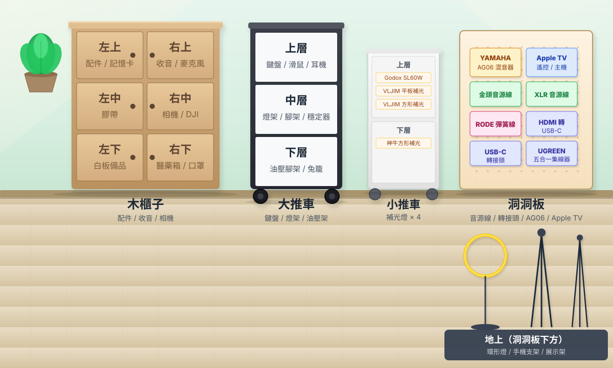

📱 位置示意圖 — 三方案手機版比較
iPhone (375px) — 預覽
方案 A：大按鈕分區
🗄️
木櫃子右中
共 44 件
📋
洞洞板
共 18 件
🗃️
木櫃子左上
共 12 件
🗃️
木櫃子右上
共 12 件
🛒
大推車（上）
共 8 件
🎬
地上
共 6 件
🛒
大推車（中）
共 5 件
🛒
大推車（下）
共 4 件
🛒
小推車
共 4 件
📍 查看實體位置示意圖
優點：
最直接、字最大、按鈕最好點。
缺點：
少了空間感，地圖變成次要連結。
iPhone (375px) — 預覽
方案 B：彩色膠囊 + 地圖
木櫃子右中
44
洞洞板
18
木櫃子左上
12
木櫃子右上
12
大推車（上）
8
地上
6
大推車（中）
5
大推車（下）
4
小推車
4

📍 點上方按鈕篩選 · 點地圖放大
優點：
緊湊、有設計感、地圖+按鈕並列。
缺點：
資訊密度高、按鈕較小。
iPhone (375px) — 預覽
方案 C：地圖 + 清單列表
💡 點地圖放大 · 點清單篩選位置
🔍 全螢幕
各位置收納數量
木櫃子右中
44 件
›
洞洞板
18 件
›
木櫃子左上
12 件
›
木櫃子右上
12 件
›
大推車（上）
8 件
›
地上
6 件
›
大推車（中）
5 件
›
優點：
地圖優先 + 清單超好點，最像現代 app。
缺點：
佔的垂直空間最多。